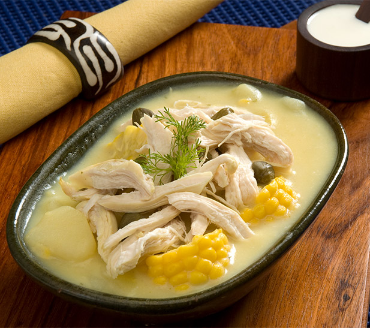

Ajiaco

Ajiaco is one of the most delicious colombian dishes. In fact, it is my favorite. It is a soup flavoured mainly through a herb called guascas. It is eaten with avocado and cilantro. A beautiful video recipe can be found here.
Ingredients
- 2 large bone-in, skin-on chicken breasts
- 1 large yellow onion, coarsely chopped
- 5 clove garlic, coarsely chopped
- 1 tablespoon salt
- 2 tablespoons of vegetal oil
- 4 cups chicken stock
- 1 1/2 pounds mixed potatoes (ideally, criollas and pastusas (Yukon Potato)), peeled and cut into bite-size chunks
- 2 to 3 medium ears corn, quartered, or 1 1/2 cups frozen corn kernels
- 2 tablespoons dried guascas
Preparation
- Heat the oil in a heavy 4-quart lidded pot over medium-high heat.
- Add the chicken with the vegetables and brown each side
- Pour in the stock and raise the heat to high.
- When the mixture boils, lower the heat to medium-low then cover and simmer. Cook until the chicken is tender.
- Take the chicken aside and reserve the liquid. Then, when cold, cut the chicken into bite-size strips and discard the bones.
- Place the potatoes in the pot with the cooking liquid and turn the heat to medium, for at least five minutes
- Add the corn, cilantro and the guascas to the soup. Simmer, covered until potatoes are tender. Then put the chicken into the liquid.
- Wait until the chicken is warm and serve.